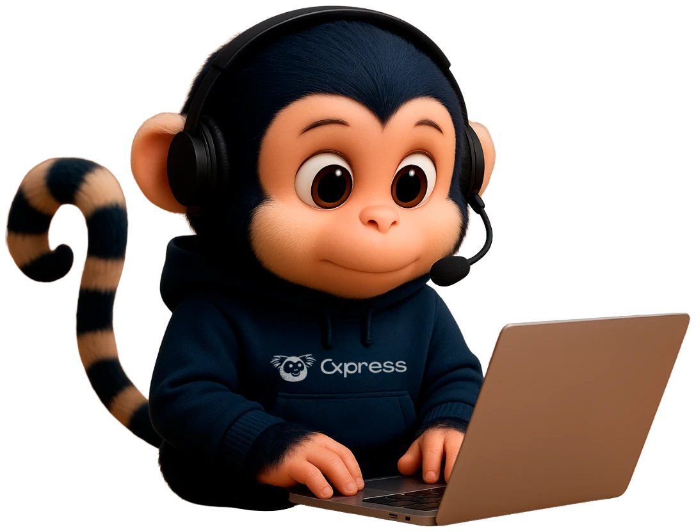

Samir
Samir
01
Identifica intención de compra, nutre la relación con tus clientes y aumenta tus ventas

Conecta con tu comunidad y transforma engagement en ventas: el agente responde comentarios y mensajes en Instagram, TikTok, Facebook y Google My Business.
Agenda una demoMás de 800 clientes confían en nosotros


Identifica intención de compra, nutre la relación con tus clientes y aumenta tus ventas

Respuestas instantáneas a preguntas frecuentes
Responde comentarios y DMs al instante, automáticamente
Automatiza mensajes con acciones clave. Envía DMs, crea flujos y responde comentarios
*Resultados obtenidos por clientes Cxpress en la atención a través de redes sociales, con base en el reporte interno Concierge, de 2025. Los resultados pueden variar según la operación.
Responde con tus palabras y tu forma de decir las cosas, no con un guion genérico.
Contesta el primer mensaje a cualquier hora, en lenguaje natural.
Cada persona recibe la misma calidad de respuesta, sin importar el volumen.
Deja de responder mil veces lo mismo y enfócate en las conversaciones que deciden una venta.